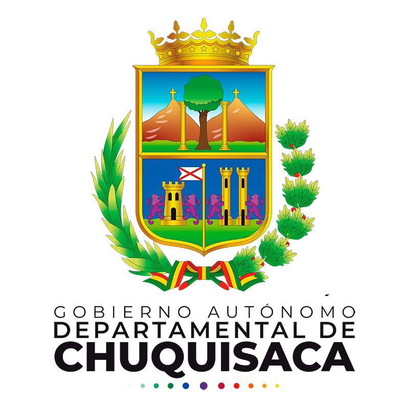

| LOGOTIPO |
EMPRESA / INSTITUCIÓN |
DESCRIPCIÓN |
LUGAR |
CARGO |
PERIODO DE TRABAJO (Desde, Hasta)
|
|
Gobierno Autonomo Departamental de Cochabamba |
- Elaboración de Mapas de Riesgo.
- Identificación con herramientas SIG zonas de Afectadas, Vulnerables y Amenazadas por el Cambio Climático.
- Coadyuvar en elaboración y ejecución de proyectos de prevención y control de riesgos climáticos
|
Cochabamba - Bolivia |
Técnico Unidad de Gestión de Riesgos |
03/10/2011 |
06/05/2012 |
|
Gobierno Autonomo Departamental de Cochabamba |
- Revisión de proyectos desde el ambito ambiental
- Control y seguimiento de actividades, obras o proyectos implementados (identificación de impactos ambientales y evaluación de la eficacia de las medidas de mitigación)
- Uso de herramientas SIG (para la gestión ambiental)
|
Cochabamba - Bolivia |
Técnico de Medio Ambiente |
07/05/2012 |
03/09/2013 |
|
PROAGRO GIZ |
- Elaboración del documento sobre: MONITOREO DE EFICIENCIAS DE RIEGO PARA EL MODELO DE GESTION RIEGO TECNIFICADO EN EL CENTRO DE REFERENCIA DE HORTALIZAS (INIAF - GAR-VM).
|
Villamontes - Tarija - Bolivia |
Consultor |
04/09/2013 |
04/10/2013 |
|
PROAGRO GIZ |
- Elaboración del documento sobre: EXPERIENCIAS DE RIEGO TECNIFICADO EN EL CHACO BOLIVIANO (ENTRE RIOS – VILLAMONTES)
|
Villamontes / Entre Rios - Tarija - Bolivia |
Consultor |
01/03/2014 |
20/04/2014 |
|  |
Gobierno Autonomo Departamental de Cochabamba |
- Revisión de proyectos desde el ambito ambiental
- Control y seguimiento de actividades, obras o proyectos implementados (identificación de impactos ambientales y evaluación de la eficacia de las medidas de mitigación)
- Elaboración de base de datos SIG de las áreas de forestación y reforestación del Proyecto Forestal GAD Chuquisaca
|
Chuquisaca - Bolivia |
Técnico SIG y Medio Ambiente |
01/05/2014 |
31/12/2014 |
|
Servicios de Ingeniería Multidisciplinaria |
- Elaboración de diseños hidráulicos y agronómicos para proyectos de riego
- Elaboración de Estudios de Evaluación de Impacto Ambiental
- Elaboración de base de datos SIG de las áreas de forestación y reforestación del Proyecto Forestal GAD Chuquisaca
|
Cochabamba - Bolivia |
Consultor en riego |
15/01/2015 |
02/09/2015 |
 |
Instituto Nacional de Investigación Agropecuaria y Forestal |
- Sistematizar, analizar e interpretar la información generada por el PN-Hortalizas del INIAF en coordinación con el equipo técnico del PN Hortalizas
- Elaboración de la Síntesis de Resultados, documentos técnicos, artículos científicos del PN-Hortalizas y promover su divulgación
- Implementación de diseños de experimentos para los cultivos de ajo, tomate y cebolla
|
Sipe Sipe - Cochabamba - Bolivia |
Técnico en sistematización de Información y Manejo de Paquetes Estadisticos |
03/09/2015 |
02/09/2016 |
 |
Empresa Nacional de Electricidad Coorporación |
- Identificación y análisis de la situación de desarrollo productivo del área del proyecto hidroeléctrico "Rositas"
- Levantamiento geográfico mediante SIG, de todas las zonas del proyecto.
- Proveer de información permanente en temas productivos y socio ambientales
- Análisis de los problemas socio ambientales emergentes.
|
Abapó - Santa Cruz - Bolivia |
Profesional en gestión Social SIG y Medio Ambiente |
03/10/2016 |
31/12/2016 |
|
Empresa Nacional de Electricidad filiar Guaracachi |
- Identificación y análisis de la situación de desarrollo productivo del área del proyecto hidroeléctrico "Rositas"
- Levantamiento geográfico mediante SIG, de todas las zonas del proyecto.
- Proveer de información permanente en temas productivos y socio ambientales
- Análisis de los problemas socio ambientales emergentes.
|
Santa Cruz de la Sierra - Santa Cruz - Bolivia |
Asistente Técnico Socioambiental |
02/02/2017 |
03/07/2017 |
|
Empresa Nacional de Electricidad filiar Guaracachi |
- Apoyo en el estudio de “Análisis de Riesgo de Deforestación por Actividades Agropecuarias y Medidas de Mitigación en Bolivia”
|
Santa Cruz / Cochabamba / La Paz - Bolivia |
Consultor |
01/02/2018 |
30/06/2018 |
|
Empresa Nacional de Electricidad filiar Guaracachi |
- - Elaboración del levantamiento de video inventario básico de los principales corredores de la Red Vial Fundamental de Bolivia donde se ejecutó un inventario de 10.000,00 km de carretera
|
Bolivia |
Consultor |
01/02/2018 |
30/06/2018 |